공조냉동기계기사(구) (2014-03-02 기출문제)
1과목: 기계열역학
1. 저온실로부터 46.4kW의 열을 흡수하고자 할 때 10kW의 동력을 필요로 하는 냉동기가 있다면, 이냉동기의 성능계수(COP)는?
- 4.64
- 5.65
- 56.5
- 46.4
(정답률: 76%)

2. 교축과정(Throttling Process)에 있어서 처음 상태와 최종 상태의 엔탈피는 어떻게 되는가?
- 처음 상태가 크다.
- 최종 상태가 크다.
- 같다.
- 경우에 따라 다르다.
(정답률: 76%)
3. 500W의 전열기로 4kg의 물을 20℃에서 90℃까지 가열 하는데 몇분이 소용되는가? (단, 전열기에서 열은 전부 온도 상승에 사용되고 물의 비열은 4,180J/kg·K이다.)
- 16
- 27
- 39
- 45
(정답률: 64%)
4. 금속판의 두께 10mm, 열전도율이 15W/m·℃ 인 금속판의 두면의 온도가 각각 70℃와 50℃ 일 때 전열면 1m2당 1분 동안에 전달되는 열량은 몇 kJ 인가?
- 1800
- 14000
- 92000
- 162000
(정답률: 66%)
5. 냉매 R-134a를 사용하는 증기 -압축 냉동사이클에서 냉매의 엔트로피가 감소하는 구간은 어디인가?
- 증발구간
- 압축구간
- 팽창구간
- 응축구간
(정답률: 68%)
6. 절대온도가 T1, T2인 두 물체에서 열 량 Q가 T1에서 T2로 이동할 때 이 두 물체가 이루는 계의 엔트로피 변화를 나타내는 식은? (단, T1＞T2)
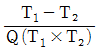
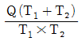
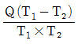
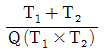
(정답률: 75%)
7. 카르노 열기관에서 열공급은 다음 중 어느 가역과정에서 이루어지는가?
- 등온팽창
- 등온압축
- 단열팽창
- 단열압축
(정답률: 49%)
8. 밀폐된 실린더 내의 기체를 피스톤으로 압축하는 동안 300kJ의 열이 방출되었다. 압축일의 양이 400kJ이라면 내부에너지의 증가는?
- 100kJ
- 300kJ
- 400kJ
- 700kJ
(정답률: 70%)
9. 어떤 시스템이100kJ의 열을 받고, 150kJ의 일을 핬다면 이 시스템의 엔트로피는?
- 증가한다.
- 감소한다.
- 변하지 않는다.
- 시스템의 온도에 따라 증가할 수도 있고 감소할 수도 있다.
(정답률: 61%)
10. 초기상태 압력 2MPa, 온도 20℃인 1kg의 공기가 압력 4MPa, 온도 100℃의 최종상태로 변했다면 이 때 최종체적은 초기체적의 약 몇 배인가?
- 0.125
- 0.637
- 3.86
- 5.25
(정답률: 65%)
11. 서로 같은 단위를 사용할 수 없는 것으로 나타낸 것은?
- 열과 일
- 비내부에너지와 비엔탈피
- 비엔탈피와 비엔트로피
- 비열과 비엔트로피
(정답률: 67%)
12. 질량(質量) 50kg인 계(系)의 내부에너지가(u)가 100kJ/kg이며, 계의 속도가 100m/s이며, 중력장(重力場)의 기준면으로부터 50m의 위치에 있다면, 이 계에 저장된 에너지(E)는?
- 3254.2kJ
- 4827.7kJ
- 5274.5kJ
- 6251.4kJ
(정답률: 56%)
13. 온도 -23℃인 냉동실로부터 기온 27℃인 대기 중으로 열을 뽑아내는 가역냉동기가 있다. 이 냉동기의 성능계수(COP)는?
- 3
- 4
- 5
- 6
(정답률: 70%)
14. 공기 1kg를 1MPa, 250℃의 상태로부터 압력 0.2MPa까지 등온변화한 경우 외부에 대하여 한 일량은 약 몇 kJ인가? (단, 공기의 기체상수는 0.287kJ/kg·K 이다)
- 157
- 242
- 313
- 465
(정답률: 55%)
15. 온도 300K, 압력 100kPa 상태의 공기 0.2kg이 완전히 단열된 강체 용기 안에 있다. 패들(paddle)에 의하여 외부에서 공기에 5kJ의 일이 행해진다. 최종 온도는 얼마인가? (단, 공기의 정압비열은 1.0035kJ/kg·K, 정적비열은 0.7165kJ/kg·K이다)
- 약 325K
- 약 275K
- 약 335K
- 약 265K
(정답률: 43%)
16. 다음 중 열전달율을 증가시키는 방법으로 적절하지 않은 것은?
- 2중 유리창을 설치한다.
- 엔진실린더의 표면 면적을 증가시킨다.
- 팬의 풍량을 증가시킨다.
- 냉각수 펌프의 유량을 증가시킨다.
(정답률: 72%)
17. 공기는 압력이 일정할 때 그 정압비열이 Cp=1.0⑤3+0.000079t kJ/kg·℃라고 하면 5kg 0℃에서 100℃까지 일정한 압력하에서 가열하는데 필요한 열량은 약 얼마인가? (단, t=℃이다)
- 100.5kJ
- 100.9kJ
- 502.7kJ
- 504.6kJ
(정답률: 57%)
18. 다음 그림과 같은 공기표준 브레이튼(Brayton) 사이클에서 작동유체 1kg당 터어빈 일은 얼마인가? (단, 온도 T1=300K, T2=475.1K, T3=1,100K, T4=694.5K이며, 공기의 정압비열은 1.0035kJ/kg·K, 정적비열은 0.7165kJ/kg·K 이다)
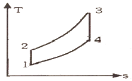
- 406.9kJ/kg
- 290.6kJ/kg
- 627.2kJ/kg
- 448.3kJ/kg
(정답률: 47%)
19. 준편형 과정으로 실린더 안의 공기를 100kPa, 300K 상태에서 400kPa까지 압축하는 과정 동안 압력과 체적의 관계가 “PVn = 일정(n=1.3)"이며, 공기의 정적비열은 Cv=0.717kJ/kg·K, 기체상수는 (R)=0.2875kJ/kg·K이다. 단위질량당 일과 열의 전달량은?
- 일=-108.2kJ/kg, 열=-27.11kJ/kg
- 일=-108.2kJ/kg, 열=-189.3kJ/kg
- 일=-125.4kJ/kg, 열=-27.11kJ/kg
- 일=-125.4kJ/kg, 열=-189.3kJ/kg
(정답률: 45%)
20. 이상기체의 마찰이 없는 정압과정에서 열량Q응? (단, Cv는 정적비열, Cp는 정압비열, k는 비열비, dT는 임의의 점의 온도변화이다.)
- Q=CvdT
- Q=k2CvdT
- Q=CpdT
- Q=kCpdT
(정답률: 70%)
2과목: 냉동공학
21. 냉매로서의 갖추어야 할 중요요건에 대한 설명으로 틀린 것은?
- 동일한 냉동능력에 대하여 냉매가스의 용적이 적을 것
- 저온에 있어서도 대기압 이상의 압력에서 증발하고 비교적 저압에서 액화할 것
- 점도가 크고 열전도율이 좋을 것
- 증발열이 크며 액체의 비열이 작을 것
(정답률: 77%)
22. 2단 냉동사이틀에서 응축압력을 Pc, 증발압력을 Pe라 할 때 이론적인 최적의 중간압력으로 가장 적당한 것은?
- Pc.pe
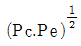
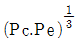
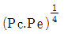
(정답률: 81%)
23. 20℃, 500kg의 물을 -10℃의 얼음으로 만들고자 한다.이 때 필요한 냉동능력은 약 몇 RT인가? (단, 물의 비열을 1kcal/kg·C, 얼음의 비열을 0.5kcal/kg·℃ 물의 응고잠열은 80kcal/kg, 1RT를 3,320kcal/h로 한다)
- 9.79
- 13.55
- 15.81
- 16.57
(정답률: 67%)
24. 두께 : 100mm의 콘크리트의 내면에 두께 200mm 발포스티로폼으로 방열을 하고 또 그 내면을 10mm 두께의 내방판을 설치한 냉장고가 있다. 냉잘실 온도가 -30℃이고, 평균외기 온도가 35℃이며 냉장고의 벽면적이 100m2인 경우 전열량은 약 얼마인가?
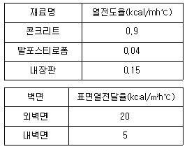
- 1076kcal/h
- 1196kcal/h
- 1296kcal/h
- 1396kcal/h
(정답률: 60%)
25. 일반적으로 냉동방식에 물을 냉매로 사용하는 냉동방식은?
- 터보식
- 흡수식
- 전자식
- 증기압축식
(정답률: 77%)
26. 온도식 자동팽창 밸브에 관한 설명으로 적절하지 못한 것은?
- 주로 암모니아 냉동장치에 사용한다.
- 감온통의 설치는 액가스 열교환기가 있을 경우에는 증발기 쪽에 밀착하여 설치한다.
- 부하변동에 따라 냉매유량 제어가 가능하다.
- 내부균압형과 외부균압형이 있다.
(정답률: 50%)
27. 냉동기 부속기기의 설치 위치로 옳지 않은 것은?
- 암모니아 냉동기의 유분리기는 압축기와 응축기 사이
- 액 분리기는 증발기와 압축기 사이
- 건조기는 수액기와 응축기 사이
- 수액기는 응축기와 팽창변 사이
(정답률: 60%)
28. 스크류 압축기의 구성요소가 아닌 것은?
- 스러스트 베어링
- 숫 로우터
- 암 로우터
- 크랭크축
(정답률: 73%)
29. 냉매 R-22를 사용하는 냉동기에서 증발기입구의 엔탈피 106kcal/kg, 증발기출구의 엔탈피 451kcal/kg, 응축기입구의 엔탈피 471kcal/kg 이었다. 이 냉동기의 ①냉동효과(kcal/kg), ②성적계수(COP)얼마인가?
- ① 345, ② 17.2
- ① 365, ② 17.2
- ① 345, ② 10.2
- ① 365, ② 10.2
(정답률: 64%)
30. 펠티에(Peltier)효과를 이용한 냉동방식에 대한 설명으로 옳지 않은 것은?
- 펠티에 효과를 냉동에 이용한 것이 전자냉동 또는 열전기식 냉동법이다.
- 펠티에 효과를 냉동법으로 실용화에 어려운 점이 많았으나 반도체 기술이 발달하면서 실용화되었다.
- 이 냉동방법을 이용한 것으로는 휴대용 냉장고, 가정용 특수냉장고, 물 냉각기, 핵 잠수함 내의 냉난방장치이다.
- 이 냉동방법도 증기 압축식 냉동장치와 마찬가지로 압축기, 응축기, 증발기 등을 이용한 것이다.
(정답률: 74%)
31. 냉동기의 압축기에 사용되는 냉동유의 구비조건으로 옳지 않은 것은?
- 저온에서 응고점이 충분히 낮고, 고온에서 열화가 되지 않을 것
- 인화점이 높고, 냉매에 잘 용해될 것
- 수분 함유량이 적고, 전기절연내력이 클 것
- 장기간 사용하여도 변질되거나 열화되지 않을 것
(정답률: 77%)
32. 압축기의 토출압력 상승 원인으로 옳지 않은 것은?
- 냉각수 부족 및 냉각수온이 높을 때
- 냉각관내 물 때 및 스케일이 끼었을 때
- 불응축가스 혼입시
- 응축온도가 낮을 때
(정답률: 70%)
33. 증기 압축식 냉동 사이클에서 증발온도를 일정하게 유지하고 응축온도를 상승시킬때 나타날 수 있는 현상 중 잘못 된 것은?
- 성적계수 감소
- 토출가스 온도 상승
- 소요동력 증대
- 플래쉬가스 발생량 감소
(정답률: 78%)
34. 냉동장치의 냉매량이 부족 시 나타나는 현상 중에서 맞는 것은?
- 흡입압력이 낮아진다.
- 토출압력이 높아진다.
- 냉동능력이 증가한다.
- 흡입압력이 높아진다.
(정답률: 59%)
35. 증발식 응축기의 응축능력을 높이기 위한 방법으로 옳은 것은?
- 순환수 온도를 저하시킨다.
- 외기의 습구 온도를 높인다.
- 순환수 온도를 높인다.
- 순환수량을 줄인다.
(정답률: 51%)
36. 전열면적 17m2인 브라인 쿨러(Brine cooler)가 있다. 브라인 유량이 180L/min, 쿨러의 브라인 입, 출구 온도 -12℃ 및 -16℃이다. 브라인 쿨러의 냉동부하는 약 몇 kcal/h인가? (단, 브라인 비중량은 1.2kg/L이고, 비열은 0.72kcal/kg·℃이다)
- 31104
- 33460
- 37324
- 51840
(정답률: 59%)
37. 왕복동 냉동기에서 -70~-30℃ 정도의 저온을 얻기 위하여 2단압축방식을 채용하는 있다. 그 이유로 설명한 것 중 옳은 것은?
- 토출가스 온도를 낮추기 위하여
- 압축기의 효율 향상을 막기 위하여
- 윤활유의 온도를 상승시키기 위하여
- 성적계수를 낮추기 위하여
(정답률: 76%)
38. 각종 냉동기의 압축작용에 대한 설명 중 옳지 않은 것은?
- 증기압축식 냉동기 : 증발기에서 증발한 저온저압의 증기를 압축기에서 압축하여 고온고압의 증기로 내보낸다.
- 흡수식 냉동기 : 흡수기 및 발생기가 증기압축식 냉동기의 압축기 역할을 한다고 할 수 있다.
- 증기분사식 냉동기 : 노즐에서 분사된 증기와 증발기에서 증발한 증기가 혼합되지만 압축작용을 하는 기기는 없다.
- 열펌프 : 증기압축식 냉동기와 같은 방법으로 증기를 압축한다.
(정답률: 61%)
39. 2원 냉동 사이클에 대한 설명으로 옳은 것은?
- -100℃정도의 저온을 얻고자 할 때 사용되며, 보통 저온측에는 임계점이 높은 냉매를, 고온측에는 임계점이 낮은 냉매를 사용한다.
- 저온부 냉동사이클의 응축기 방열량을 고온부 냉동 사이클의 증발기가 흡열하도록 되어있다.
- 일반적으로 저온측에 사용하는 냉매는 R-12, R-22, 프로판 등이다.
- 일반적으로 고온측에 사용하는 냉매는 R-13, R-14 등이다.
(정답률: 57%)
40. 냉동장치 내 팽창밸브를 통과한 후의 냉매의 상태로 옳은 것은?
- 엔탈피 감소 및 압력강하
- 온도저하 및 엔탈피 감소
- 압력강하 및 온도저하
- 엔탈피 감소 및 비체적 감소
(정답률: 69%)
3과목: 공기조화
41. 복사난방에있어서 바닥패널의 온도로 가장 알맞은 것은?
- 95℃ 정도
- 80℃ 정도
- 55℃ 정도
- 30℃ 정도
(정답률: 56%)
42. 두께 5cm, 면적 10m2인 콘크리트 벽의 외측의 온도가 40℃, 내측의 온도가 20℃ 라 할 때, 10시간 동안 이 벽을 통하여 전도되는 열량은? (단, 콘크리트의 열전도율이 1.3W/m·K,로 한다.)
- 5.2kWh
- 52kWh
- 7.8kWh
- 78kWh
(정답률: 56%)
43. 절대습도에관한 설명으로 옳지 않은 것은?
- 절대습도는 비습도라고도 한다.
- 절대습도는 수증기 분압의 함수이다.
- 건공기 질량에 대한 수증기 질량에 대한 비로 정의한다.
- 공기 중의 수분 함량이 변해도 절대습도는 일정하게 유지한다.
(정답률: 64%)
44. 각층 유닛 방식에 관한 설명으로 옳지 않은 것은?
- 외기용 공조기가 있는 경우에는 습도 제어가 곤란하다.
- 장치가 세분화되므로 설비비가 많이 들고 기기를 관리하기가 불편하다.
- 각층마다 부하 및 운전시간이 다른 경우 적합하다.
- 송풍덕트가 짧게 된다.
(정답률: 64%)
45. 1000명을 수용하는 극장에서 1인당 CO2 토출량이 15L/h이면 실내 CO2량을 0.1%로 유지하는데 필요 환기량은? (단, 외기의 CO2량은 0.04%이다.)
- 2500m3/h
- 25000m3/h
- 3000m3/h
- 30000m3/h
(정답률: 59%)
46. 크기 1,000×500mm의 직관 덕트에 35℃의 온풍 18,000m3/h이 흐르고 있다. 이 덕트가 -10℃의 실외부분을 지날 때 길이 20m당의 덕트표면으로부터 열손실은? (단, 덕트는 암면 25mm로 보온되어 있고 이 때 1,000m당 온도차 1℃에 대한 온도강하는 0.9℃이다. 공기 의 밀도는 1.2kg/m3, 정압비열은 1.01kJ/kg·K이다.)
- 3.0kW
- 3.8kW
- 4.9kW
- 6.0kW
(정답률: 46%)
47. 덕트의 부속품에 대한 설명으로 옳지 않은 것은?
- 댐퍼는 통과풍량의 조정 또는 개폐에 사용되는 기구이다.
- 분기덕트 내의 풍량제어용으로는 주로 익형 댐퍼를 사용한다.
- 덕트의 곡부에 있어서 덕트의 곡률 반지름이 덕트의 긴변의 1.5배 이내일 때는 가이드 베인을 설치하여 저항을 적게 한다.
- 가이드 베인은 곡부의 기류를 세분해서 와류의 크기를 적게 하는 것이 목적이다.
(정답률: 65%)
48. 정풍량 단일덕트방식에 관한 설명으로 옳은 것은?
- 실내부하가 감소될 경우에 송풍량을 줄여도 실내공기의 오염이 적다.
- 가변풍량방식에 비하여 송풍기 동력이 커져서 에너지 소비가 증대한다.
- 각 실이나 존의 부하변동이 서로 다른 건물에서도 온ㆍ습도의 불균형이 생기지 않는다.
- 송풍량과 환기량을 크게 계획할 수 없으며, 외기도입이 어려워 외기냉방을 할 수 없다.
(정답률: 59%)
49. 다음 중 코일의 바이패스 팩터(BF)가 작아지는 경우?
- 코일 통과풍속을 크게 할 때
- 전열면적이 작을 때
- 코일의 열수가 증가할 때
- 코일의 간격이 클 때
(정답률: 58%)
50. 온열환경 평가지표인 예상불만족감(PPD)의 권장값으로 적절한 것은?
- 5% 미만
- 10% 미만
- 20% 미만
- 25% 미만
(정답률: 53%)
51. 공기 중의 수증기가 응축하기 시작할 때의 온도, 즉 공기가 포화상태로 될때 온도를 의미하는 것은?
- 노점온도
- 건구온도
- 습구온도
- 절대온도
(정답률: 77%)
52. 온수난방용 기기가 아닌 것은?
- 방열기
- 공기방출기
- 순환펌프
- 증발탱크
(정답률: 66%)
53. 환기방식에 대한 설명으로 옳은 것은?
- 제1종 환기는 자연급기와 자연배기 방식이다.
- 제2종 환기는 기계설비에 의한 급기와 자연배기방식이다.
- 제3종 환기는 기계설비에 의한 급기와 기계설비에 의한 배기방식이다.
- 제4종 환기는 자연급기와 기계설비에 의한 배기방식이다.
(정답률: 72%)
54. 공기의 감습장치에 관한 설명으로 옳지 않은 것은?
- 화학적 감습법은 흡착과 흡수 기능을 이용하는 방법이다.
- 압축식 감습법은 감습만을 목적으로 사용하는 경우 비경제적이다.
- 흡착식 감습법은 실리카겔 등을 사용하며, 흡습재의 재생이 가능하다.
- 흡수식 감습법은 활성알루미나를 이용하기 때문에 연속적이고 큰 용량의 것에는 적용하기 곤란하다.
(정답률: 63%)
55. 다음 중 공기조화설비의 계획시 조닝(Zoning)을 하는 이유와 가장 거리가 먼 것은?
- 효과적인 실내 환경의 유지
- 설비비의 경감
- 운전 가동면에서의 에너지 절약
- 부하 특성에 대한 대처
(정답률: 69%)
56. 보일러의 성능과 관련한 설명으로 옳지 않은 것은?
- 증발계수는 실제증발량을 환산(상당)증발량으로 나눈 값을 말한다.
- 보일러 마력은 매시 100℃의 물 15.65kg을 증기로 변화시킬 수 있는 능력이다.
- 보일러 효율은 증기에 흡수된 열량과 연료의 발열량과의 비이다.
- 보일러 마력을 전열면적으로 표시할 때는 수관 보일러의 전열면적 0.929m2를 1보일러마력이라 한다.
(정답률: 43%)
57. 열펌프에 관한 설명으로 옳은 것은?
- 열펌프는 펌프를 가동하여 열을 내는 기관이다.
- 난방용의 보일러를 냉방에 사용할 때 이를 열펌프라 한다.
- 열펌프는 증발기에서 내는 열을 이용 한다.
- 열펌프는 응축기에서의 방열을 난방으로 이용하는 것이다.
(정답률: 63%)
58. 공기조화방식 중에서 전공기방식에 속하는 것은?
- 패키지유닛방식
- 복사냉난방방식
- 유인유닛방식
- 저온공조방식
(정답률: 58%)
59. 다음 중 콜드 드래프트의 발생원인과 가장 거리가 먼 것은?
- 인체 주위의 공기온도가 너무 낮을 때
- 기류의 속도가 낮고 습도가 높을 때
- 주위 벽면의 온도가 낮을 때
- 겨울에 창문의 극간풍이 많을 때
(정답률: 67%)
60. 흡수식 냉동기에 관한 설명으로 옳지 않은 것은?
- 비교적 소용량보다는 대용량에 적합하다.
- 발생기에는 증기에 의한 가열이 이루어진다.
- 냉매는 브롬화리튬(LiBr), 흡수제는 물(H2O)의 조합으로 이루어진다.
- 흡수기에서는 냉각수를 사용하여 냉각시킨다.
(정답률: 69%)
4과목: 전기제어공학
61. 다음 그림의 신호흐름선도에서 C(s)/R(s)는?
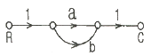
- 1/ab
- 1/a+1/b
- ab
- a+b
(정답률: 52%)
62. 5KVA, 3000/200V의 변압기가 단락시험을 통한 임피던스 전압이 100V, 동손이 100W라 할 때 퍼센트 저항강하는 몇 %인가?
- 2
- 3
- 4
- 5
(정답률: 25%)
63. 논리식
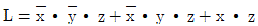
를 간단히 한 식은?- x
- z
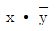
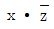
(정답률: 61%)
64. 뒤진 역율 80%, 1,000kW의 3상 부하가 있다. 이것에 콘덴서를 설치하여 역율을 95%로 개선하려고 한다. 필요한 콘덴서의 용량은 약 몇 [KVA]인가?
- 422
- 633
- 844
- 1266
(정답률: 31%)
65. 불연속제어에 속하는 것은?
- 비율제어
- 비례제어
- 미분제어
- ON-OFF제어
(정답률: 78%)
66. 제어기에 설명 중 틀린 것은?
- P 제어기 : 잔류편차 발생
- I 제어기 : 잔류편차 소멸
- D 제어기 : 오차예측제어
- PD 제어기 : 응답속도 지연
(정답률: 72%)
67. A=6+j8, B=20∠60° 일 때 A+B를 직각좌표형식으로 표현하면?
- 16+j18
- 16+j25.32
- 23.32+j18
- 26+j28
(정답률: 62%)
68. 절연의 종류에서 최고 허용온도가 낮은 것부터 높은 순서로 옳은 것은?
- A종, Y종, E종, B종
- Y종, A종, E종, B종
- E종, Y종, B종, A종
- B종, A종, E종, Y종
(정답률: 64%)
69. 전200V에 접속하면 1kW의 전력을 소비하는 부하를 100V의 전원에 접속하면 소비전력은 몇 [W]가 되겠는가?
- 100
- 150
- 200
- 250
(정답률: 54%)
70. 도체에 전하를 주었을 경우 틀린 것은?
- 전하는 도체 외측의 표면에만 분포한다.
- 전하는 도체 내부에만 존재한다.
- 도체 표면의 곡률 반경이 작은 곳에 전하가 많이 모인다.
- 전기력선은 정(+)전하에서 시작하여 부전하(-)에서 끝난다.
(정답률: 69%)
71. “도선에서 두 점사이의 전류의 세기는 그 두 점사이의 전위차에 비례하고 전기저항에 반비례한다.” 이것은 무슨 법칙을 설명한 것인가?
- 렌츠의 법칙
- 옴의 법칙
- 플레밍의 법칙
- 전압분배의 법칙
(정답률: 75%)
72. 그림과 같은 논리회로는?
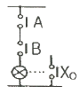
- OR회로
- AND회로
- NOT회로
- NOR회로
(정답률: 60%)
73. 원뿔주사를 이용한 방식으로서 비행기 등과 같이 움직이는 목표값의 위치를 알아보기 위한 서보용 제어기는?
- 자동조타장치
- 추적레이더
- 공작기계의 제어
- 자동평형기록계
(정답률: 75%)
74. 측정하고자 하는 양을 표준량과 서로 평형을 이루도록 조절하여 측정량을 구하는 방식은?
- 편위법
- 보상법
- 치환법
- 영위법
(정답률: 63%)
75. 온 오프(ON-OFF) 동작을 설명으로 옳은 것은?
- 간단한 단속적 제어동작이고 사이클링이 생긴다.
- 사이클링은 제거할 수 있으나 오프셋이 생긴다.
- 오프셋은 없앨 수 있으나 응답시간이 늦어질 수 있다.
- 응답속도는 빠르나 오프셋이 생긴다.
(정답률: 66%)
76. 다음의 전선 중 도전율이 가장 우수한 재질의 전선은?
- 경동선
- 연동선
- 경알미늄선
- 아연도금철선
(정답률: 52%)
77. 사이클로 컨버터의 작용은?
- 직류-교류 변환
- 직류-직류 변환
- 교류-직류 변환
- 교류-교류 변환
(정답률: 53%)
78. 목표값에 따른 분류에 따라 열차를 무인운전 하고자 할 때 사용하는 제어방식은?
- 자력제어
- 추종제어
- 비율제어
- 프로그램제어
(정답률: 76%)
79. 다음의 중 공정제어(프로세스제어)에 속하지 않는 제어량은?
- 온도
- 압력
- 유량
- 방위
(정답률: 75%)
80. 다음 중 직류 전동기의 속도 제어 방식으로 맞는 것은?
- 주파수 제어
- 극수 변환 제어
- 슬립 제어
- 계자 제어
(정답률: 49%)
5과목: 배관일반
81. 복사난방에서의 패널(Panel)코일의 배관방식이 아닌 것은?
- 그리드코일식
- 리버스리턴식
- 벤드코일식
- 벽면그리드코일식
(정답률: 69%)
82. 트랩의 봉수가 파괴되는 원인으로 볼 수 없는 것은?
- 자기사이펀 작용
- 흡인 작용
- 분출 작용
- 통기 작용
(정답률: 64%)
83. 롤러 서포트를 사용하여 배관을 지지하는 주된 이유는?
- 신축허용
- 부식방지
- 진동방지
- 해체용이
(정답률: 59%)
84. 다음의 관의 부식 방지에 관한 것이다. 틀린 것은?
- 전기 절연을 시킨다.
- 아연도금을 한다.
- 열처리를 한다.
- 습기의 접촉을 없게 한다.
(정답률: 74%)
85. 공조배관설비에 수격작용의 방지책으로 옳지 않은 것은?
- 관 내의 유속을 낮게 한다.
- 밸브는 펌프 흡입구 가까이 설치하고 제어한다.
- 펌프에 플라이휠(fly wheel)을 설치한다.
- 조압수조(surge tank)를 관선에 설치 한다.
(정답률: 64%)
86. 호칭지름 20A 강관을 곡률반경 150mm로 90° 구부림 할 경우 곡관부의 길이는 약 얼마인가? (강관의 호칭경: 20A, 곡률반경:150mm)
- 117.8mm
- 235.5mm
- 471.0mm
- 942.0mm
(정답률: 59%)
87. 배관의 착색도료 밑칠용으로 사용되며, 녹방지응 위하여 많이사용되는 도료는?
- 산화철도료
- 광명단
- 에나멜
- 조합페이트
(정답률: 67%)
88. 관이음의 도시기호 중 유니온 이음은?
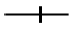
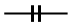
(정답률: 67%)
89. 냉동 장치의 배관설치에 관한 내용으로 틀린 것은?
- 토출가스의 합류 부분 배관은 T 이음으로 한다.
- 압축기와 응축기의 수평배관은 하향 구배로 한다.
- 토출가스 배관에는 역류방지 밸브를 설치한다.
- 토출관의 입상이 10m 이상일 경우 10m마다 중간 트랩을 설치한다.
(정답률: 68%)
90. 도시가스를 고압이라 함은 얼마 이상의 압력을 뜻하는가?
- 0.1MPa 이상
- 1MPa 이상
- 10MPa 이상
- 100MPa 이상
(정답률: 72%)
91. 캐비테이션(Cavitation)현상의 발생하는 조건이 아닌 것은?
- 흡입양정이 지나치게 클 경우
- 흡입관의 저항이 증대될 경우
- 흡입 유체의 온도가 높은 경우
- 흡입관의 압력이 양압인 경우
(정답률: 64%)
92. 통기관에 관한 설명으로 틀린 것은?
- 통기관경은 접속하는 배수관경의 1/2이상으로 한다.
- 통기방식에는 신정통기, 각개통기, 회로 통기 방식이 있다.
- 통기관은 트랩내의 봉수를 보호하고 관내 청결을 유지한다.
- 배수입관에서 통기입관의 접속은 90° T이음으로 한다.
(정답률: 75%)
93. 경질염화비닐관의 TS식 조인트 접합법에서 3가지 접착효과에 해당되지 않는 것은?
- 유동삽입
- 일출접착
- 소성삽입
- 변형삽입
(정답률: 55%)
94. 도시가스의 입상배관의 관지름이 20mm 일 때 움직이지 않도록 몇 m마다 고정장치를 부착해야 하는가?
- 1m
- 2m
- 3m
- 4m
(정답률: 75%)
95. 관의 종류와 이음방법을 연결이 잘못된 것은?
- 강관 - 나사이음
- 동관 - 압축이음
- 주철관 - 칼라이음
- 스테인리스강관 - 몰코이음
(정답률: 68%)
96. 냉매배관 시 주의사항이다. 틀린 것은?
- 굽힘부의 굽힘반경을 작게 한다.
- 배관속에 기름이 고이지 않도록 한다.
- 배관에 큰 응력 발생의 염려가 있는 곳에는 루프형 배관을 해준다.
- 다른 배관과 달라서 벽 관통시에는 강관 슬리브를 사용하여 보온 피복한다.
(정답률: 73%)
97. 배관용 플랜지 패킹의 종류가 아닌 것은?
- 오일 시트 패킹
- 합성수지 패킹
- 고무 패킹
- 몰드 패킹
(정답률: 56%)
98. 진공환수식 증기난반 배관에 대한 설명으로 옳지 않은 것은?
- 배관 도중에 공기 빼기 밸브를 설치한다.
- 배관에는 적당한 구배를 준다.
- 진공식에서는 리프트 피팅에 의해 응축수를 상부로 배출할 수 있다.
- 응축수의 유속이 빠르게 되므로 환수관을 가늘게 할 수가 있다.
(정답률: 57%)
99. 플라스틱 배관재료에 대한 설명 중 틀린 것은?
- 경질염화비닐관은 대부분의 무기산, 알칼리에도 침식되지 않는다.
- 일반적으로 플라스틱 배관재는 고온이 될수록 인장강도는 저하된다.
- 폴리에틸렌관은 경질염화비닐관 보다 가볍고 충격에도 강하다.
- 일반적으로 플라스틱 배관재는 마찰손실이 크고 전기 절연성이 작다.
(정답률: 63%)
100. 암모니아 냉매를 사용하는 흡수식 냉동기의 배관재료로 가장 좋은 것은?
- 주철관
- 동관
- 강관
- 동합금관
(정답률: 71%)